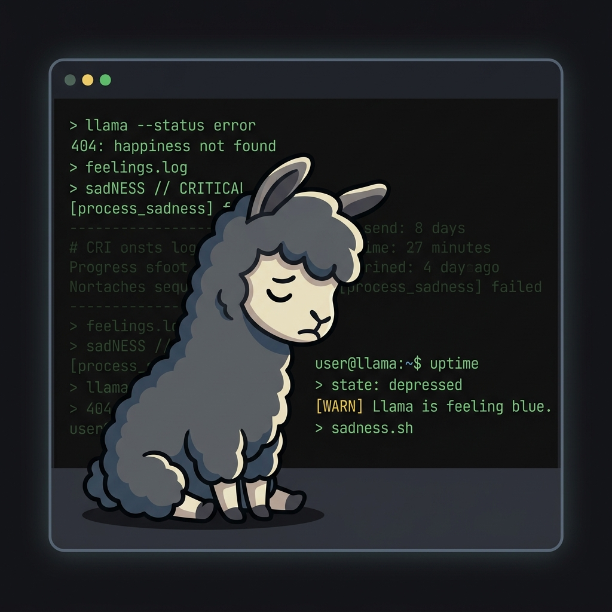

🦙 Launch and Control Local LLMs with LlamaHerd
A high-performance, native Rust TUI designed as a self-contained model launcher, parameter manager, and
real-time dashboard control center for llama-server.
📥 Get LlamaHerd
Install the latest version of LlamaHerd via the Cargo package manager or download precompiled binaries.
Cargo Package
Install directly from the crates.io registry. Requires having the Rust Toolchain installed on your system.
cargo install llama-herd
Precompiled Releases
Recommended if you do not have Rust installed. Precompiled binary assets fetched directly from GitHub.

🚀 Core Capabilities
LlamaHerd handles the complex configurations, auto-pairing, option filtering, and process lifecycles of local LLMs so you can focus on building.
Auto-Discovery & Settle Checks
Scans GGUFs and pairs them with speculative drafts/vision projectors. Includes write-stabilization checks to defer reloading during active downloads or copy operations.
Interactive Control Center
A beautiful Rust TUI dashboard powered by ratatui showing subprocess status, real-time
RAM/VRAM memory metrics, active write stabilization warnings, and scrollable console logs with native
ANSI colors.
Option & Parameter Safety
Enforces strict TOML rules, prevents command/option injections, restricts context size formats strictly
to k/K, and searches sequentially for open ports.
Hybrid Theme System
Procedural UI customizations and functional palette overrides via a simple
theme.toml configuration, falling back to a borderless simple skin.
OpenAI-Compatible Router
Functions as a dynamic API gateway. Serves OpenAI-compatible chat endpoints
(/v1/chat/completions), auto-loading presets dynamically and queryable models list
(/v1/models).
Orchestration & Shortcuts
Manage subprocess PIDs and automatically clean up zombie processes. Navigate views with
F1/F2/F3 and launch servers via F5/F6
to avoid terminal key conflicts.
⚙️ Safe, Structured Configuration
Customize LlamaHerd globally, define options on a per-model basis, or craft custom TUI themes. LlamaHerd
translates options directly into options for llama-server, while strictly shielding
sensitive runtime settings and verifying inputs.
32k →
32768).
📂 Default Config Locations
-
Linux
~/.config/llama-herd/ -
Windows
%APPDATA%\llama-herd\ -
macOS
~/Library/Application Support/llama-herd/
# ~/.config/llama-herd/config.toml
llama-server = "/usr/local/bin/llama-server"
models-dir = "/home/user/ai/models"
host = "0.0.0.0"
port = "auto" # sequential fallback (+10 ports)
# Defaults for server runs
flash-attn = "auto"
kv-quant = "q8_0"
models-max = 1
batch-size = 256
ui = true # Web UI toggle
log-verbosity = 3 # log verbosity threshold (0-5)
cache-ram = 8192 # Max cache size in MiB# Config next to model, e.g. Qwen2.5-7B.toml
[llama-herd]
is-default = true
draft = "Qwen2.5-1.5B-draft.gguf"
mmproj = "clip-qwen2.5-7b-mmproj-f16.gguf" # Vision projector
total-layers = 32
[llama-server-long]
ctx-size = "32k" # Automatically converted to 32768
ngl = "auto"
gpu-layers-draft = 32 # Draft GPU layers offload
reasoning-format = "raw" # reasoning format: raw or parsed
reasoning-budget = 1024 # reasoning tokens budget
[llama-server-short]
sps = 0.6# Custom TUI theme at ~/.config/llama-herd/theme.toml
[palette]
primary = "cyan"
secondary = "gray"
accent = "yellow"
success = "green"
error = "red"
selection = "magenta"
bg = "black"
fg = "white"
header-bg = "indexed(234)"
footer-bg = "indexed(234)"
[ui]
show-emojis = true
border-type = "rounded" # plain, rounded, double, thick🛠️ Quick Start
Launch LlamaHerd on your system in minutes.
Install LlamaHerd
Install the latest release directly from crates.io:
cargo install llama-herd
Or build from the source repository:
git clone https://github.com/rpr13/llama-herd.git && cd llama-herd && cargo install --path .
Launch Wizard & TUI Dashboard
Start LlamaHerd. An interactive setup wizard will guide you to map the
llama-server path and your models directory, then boot the dashboard.
llama-herd
Generate Presets (Early-Exit CLI)
Alternatively, scan your models directory and generate the models-preset.ini file
dynamically, exiting immediately without opening the TUI screen.
llama-herd --ini
Ensure your TERM environment variable is set to a 256-color profile (e.g.
xterm-256color or screen-256color) to properly display TUI borders and styled
ANSI logs.